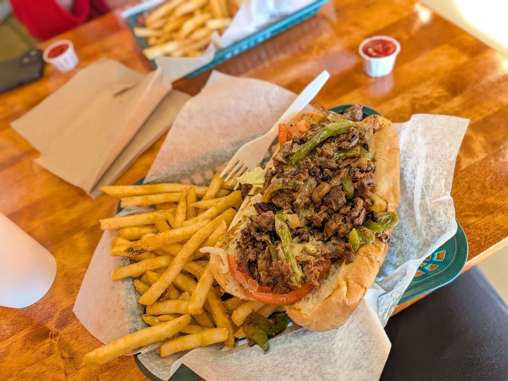

4.8★ reviews
“My son and I stopped and got some good ol Chicago dogs. The peppers onions and tomatoes are fresh and taste great. I believe it was the owner that was working, he was super nice. Great atmosphere.”
“Great find! Food was great and the staff was nice. Loved the atmosphere, and I'll for sure push some more business their way.”
“My roommate brought me here after picking me up from the airport and we both got the Chicago dog meals. The food was fresh, hot, and delicious. Service was top notch. I just can't believe that I have lived down the street from this absolute masterpiece of a restaurant and had no idea. I will definitely be coming back regularly.”
“Coulda sworn I reviewed this place before... been coming here since opening and NEVER disappointed. Burgers I found average (& by average, of course I mean better than any fast food joint) but what I've found they shine at is their Philly steak, gyro and newly discovered chicken Philly - amongst the best I've ever had! Wish they were just a shade bigger but for the price (& taste) - can't go wrong! Always been greeted pleasantly and never witnessed anything less. If folks are complaining about attitude, my guess is the one you come in with is what you'll be served; IMO, nothing wrong with…”
“Today is the first time there. It we definitely like the place a lot. We got a hamburger, a chicken and cheese sub and a chicken sandwich. We also got cheese fries and regular fries and everything was really tasty. The employee or owner was really friendly and quick and he also brought the food to the table. We are coming back for sure!”
“We had an amazing experience at this local spot! Despite our group arriving just 30 minutes before closing with a sizable order, the service was incredibly friendly and welcoming. The lady who served us went above and beyond to make sure we were comfortable, showing kindness and patience throughout. Even though they were winding down for the night, they kindly let us dine in, and we didn’t feel rushed at all. The food was delicious, perfectly cooked hot dog, sandwiches, and burgers. Portion sizes good too. I really appreciate the exceptional service and will definitely be returning soon!”